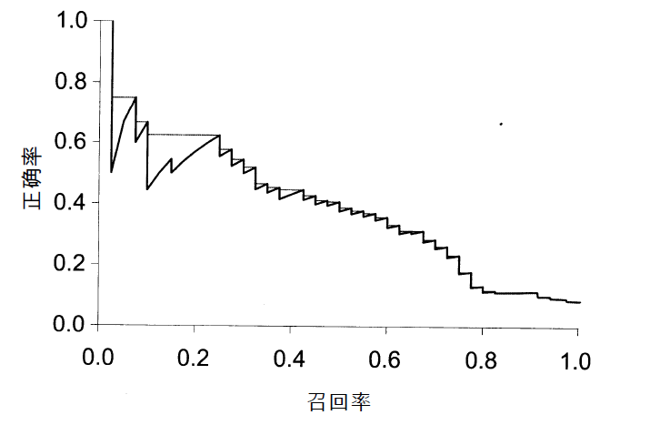
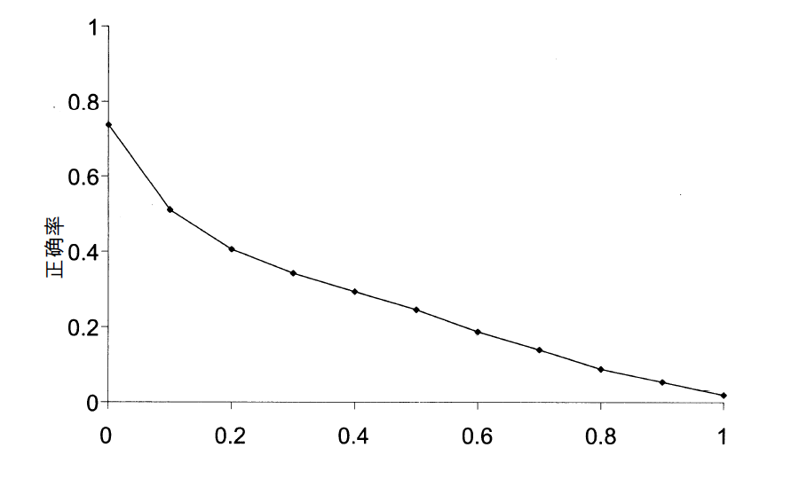
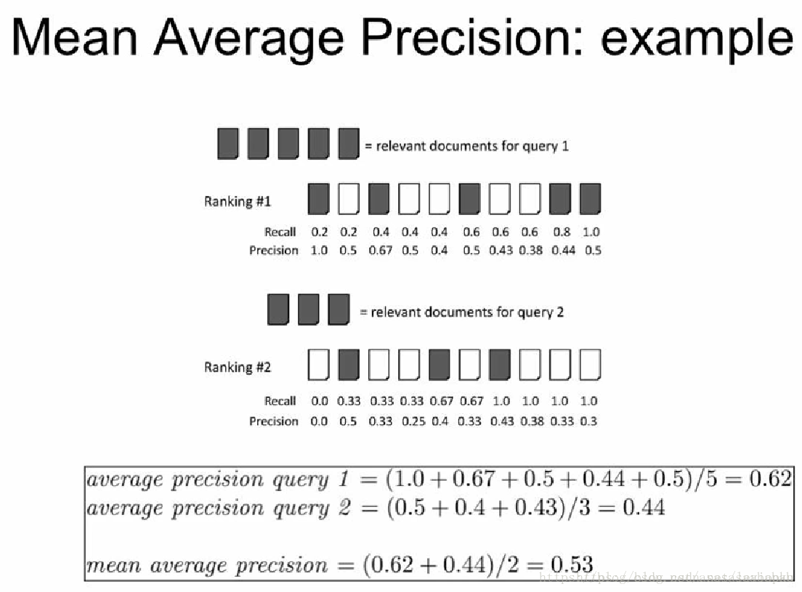

检索系统的评价
无序的检索结果评价.
如果有测试集的话,那么系统效果常用的两个基本指标就是正确率和召回率.不考虑结果的顺序的话.那就和分类的评价差不多.
- 正确率:返回与query相关文档所占比例;
- 召回率:返回相关文档所占所有相关文档的比例;
| 相关(relevant) | 不相关(nonrelevant) | |
|---|---|---|
| retrieved | true positives(tp) | false positives(fp) |
| not retrieved | false negatives(fn) | true negatives(tn) |
则有:
在这有个问题就是精确度(accuracy)对于信息检索不是一个很好的指标, 因为信息检索中数据极度不平衡.通常99.99%以上都是不相关文档. 全判定为不相关精确度都很高.
采用正确率() 和 召回率() 两个指标的有个有点,他能根据场景不同来确定指标的重要性.
如果两种都需要,直觉来看就是平均值, 这就出现了一个新的指标 F
其中, $\beta^{2} = \frac{1 - \alpha}{\alpha} , \alpha \in [0, 1]$,
有序检索结果的评价方法
正确率、召回率和F值都是基于集合的评价方法,它们都利用无序的文档集合进行计算.所以需要其他的评价方式.
在结果有序的情况下，通常很自然地会将前面k个（k=1,2,…）检索结果组成合适的返回文档子集。对每个这样的集合，都可以得到正确率和召回率，分别以它们作为纵坐标和横
坐标在平面上描点并连接便可以得到所示的正确率—召回率曲线

在某个召回率水平r上的插值正确率（interpolated precision，记为pinterp）定义为对于任意不小于r的召回率水平r′ 所对应的最大正确率，即
根据插值正确率.画出插值正确率—召回率平均曲线

- MAP(mean average precision)平均正确率值列表.
形式化地，假定信息需求qj∈Q对应的所有相关文档集合
为${d1, . . . d{mj}}，R_{jk}$是返回结果中直到遇见$d_k$后其所在位置前（含$d_k$）的所有文档集合，则有
如果某篇相关文档未返回，那么上式中其对应的正确率值为0。对于单个信息需求来说，平均正确率是未插值的正确率—召回率曲线下面的面积的近似值，因此，MAP可以粗略地认为是某个查询集合对应的多条正确率—召回率曲线下面积的平均值

MAP参考
P@k, 在上述基础上,只计算前K个结果的正确率, 该指标的优点九十一不需要计算相关文档的集合数目, 缺点是不稳定, 因为相关文档的总数会对P@k有非常强的影响.
R-precision
- ROC
- NDCG
CG表示将每个结果相关性的分值累加后作为整个列表的得分
同指标P@k一样，它基于前k个检索结果进行计算。设$R(j,d)$是评价人员给出的文档d对查询 j 的相关性得分，那么有